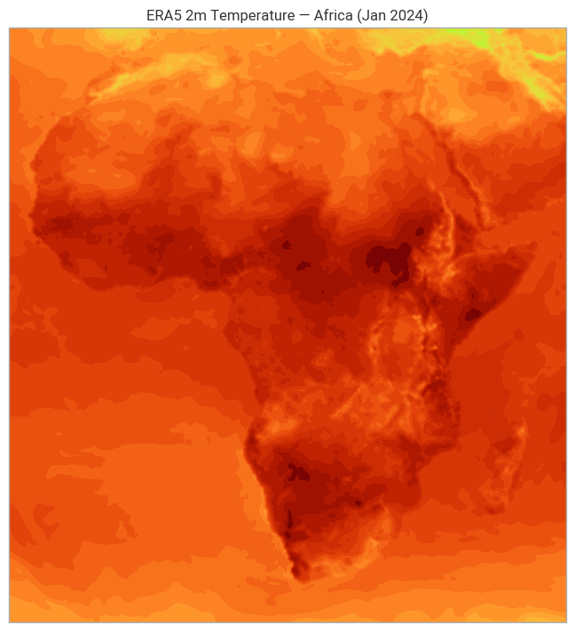

Copernicus ERA5 Reanalysis via CDS#
Last updated: 2026-05-09
Learning objectives#
Set up
cdsapicredentials and access the Copernicus Climate Data Store (CDS)Download ERA5 surface and pressure-level data for a custom region and time period
Open GRIB data with
earthkit.data— same workflow as ECMWF Open DataCompute a simple climatological baseline for Africa (2m temperature)
Understand when to use ERA5 vs real-time Open Data
Introduction#
ERA5 is ECMWF’s fifth-generation atmospheric reanalysis, covering 1940 to present at 0.25°.
It is available free of charge via the Copernicus Climate Data Store (CDS).
ERA5 is the foundation for:
Impact model training and validation (IbF, flood, drought)
Climate baselines and anomaly detection
Initialisation of regional/climate models
Credentials: A free CDS account is required.
Register at cds.climate.copernicus.eu, then set your personal token in~/.cdsapirc:url: https://cds.climate.copernicus.eu/api key: <YOUR-PERSONAL-ACCESS-TOKEN>
Prerequisites: cdsapi, earthkit-data[cds], earthkit-plots, xarray
Run time: ~10 minutes (downloads ~20 MB)
Data: ERA5 — 1 month, Africa bounding box
1) Setup & credentials#
import cdsapi
import earthkit.data as ekd
import earthkit.plots as ekp
from pathlib import Path
import xarray as xr
import numpy as np
import matplotlib.pyplot as plt
from _utils import get_data_dir
DATA_DIR = get_data_dir()
# Test CDS connection
c = cdsapi.Client(quiet=True)
print('CDS client ready')
print('Data cache:', DATA_DIR)
CDS client ready
Data cache: /Users/valtze/ecmwf-open-data-guide/book/data
2) Download ERA5 — 2m temperature over Africa#
We download one month of daily-mean 2m temperature for sub-Saharan Africa.
This is the kind of data used for heatwave early warning climatologies.
Two access patterns shown:
cdsapidirectly — the traditional approachearthkit.datawrapper — consistent with other notebooks in this series
# Option A: cdsapi directly
era5_path = DATA_DIR / 'era5_africa_2t_2024_jan.grib'
if not era5_path.exists():
c.retrieve(
'reanalysis-era5-single-levels',
{
'product_type': 'reanalysis',
'variable': ['2m_temperature', 'total_precipitation', 'mean_sea_level_pressure'],
'year': '2024',
'month': '01',
'day': [f'{d:02d}' for d in range(1, 32)],
'time': '12:00',
'area': [40, -20, -40, 55], # N, W, S, E — sub-Saharan Africa
'data_format': 'grib',
},
str(era5_path)
)
print('Downloaded:', era5_path)
else:
print('Using cached file:', era5_path)
Downloaded: /Users/valtze/ecmwf-open-data-guide/book/data/era5_africa_2t_2024_jan.grib
# Option B: earthkit.data wrapper (same result, consistent API)
# Uncomment to use instead of Option A above
# ds_era5 = ekd.from_source(
# 'cds',
# 'reanalysis-era5-single-levels',
# {
# 'product_type': 'reanalysis',
# 'variable': '2m_temperature',
# 'year': '2024', 'month': '01', 'day': '15', 'time': '12:00',
# 'area': [40, -20, -40, 55],
# 'data_format': 'grib',
# }
# )
# print(ds_era5.ls())
3) Open and inspect with earthkit.data#
ds = ekd.from_source('file', str(era5_path))
print(ds.ls())
centre shortName typeOfLevel level dataDate dataTime stepRange dataType \
0 ecmf 2t surface 0 20240101 1200 0 an
1 ecmf tp surface 0 20240101 600 5-6 fc
2 ecmf msl surface 0 20240101 1200 0 an
3 ecmf 2t surface 0 20240102 1200 0 an
4 ecmf tp surface 0 20240102 600 5-6 fc
.. ... ... ... ... ... ... ... ...
88 ecmf tp surface 0 20240130 600 5-6 fc
89 ecmf msl surface 0 20240130 1200 0 an
90 ecmf 2t surface 0 20240131 1200 0 an
91 ecmf tp surface 0 20240131 600 5-6 fc
92 ecmf msl surface 0 20240131 1200 0 an
number gridType
0 0 regular_ll
1 0 regular_ll
2 0 regular_ll
3 0 regular_ll
4 0 regular_ll
.. ... ...
88 0 regular_ll
89 0 regular_ll
90 0 regular_ll
91 0 regular_ll
92 0 regular_ll
[93 rows x 10 columns]
4) Plot — 2m temperature, Africa#
# Select a single 2t field and plot with earthkit.plots
t2m_fields = ds.sel(shortName='2t')
t2m_first = t2m_fields[0]
m = ekp.Map()
m.plot(t2m_first)
m.title(f"ERA5 2m Temperature — Africa (Jan 2024)")
/Users/valtze/miniforge3/envs/ecmwf-open-data-guide/lib/python3.10/site-packages/earthkit/plots/components/subplots.py:678: UserWarning: `plot` is deprecated. Use `quickplot` instead.
warnings.warn("`plot` is deprecated. Use `quickplot` instead.")
Text(0.5, 1.0, 'ERA5 2m Temperature — Africa (Jan 2024)')

5) ERA5 vs real-time Open Data — when to use which#
ERA5 |
ECMWF Open Data |
|
|---|---|---|
Time coverage |
1940–present |
Last ~4 days |
Latency |
~5 days lag |
~1–6 hours |
Grid |
0.25° |
0.25° (9km later 2026) |
Credentials |
CDS free account |
None |
Use case |
Climatology, model training |
Operational forecasting |
For IbF model training: ERA5 provides the historical climate baseline.
For operational triggers: use ECMWF Open Data or SOFF forecasts.
Take-home messages#
ERA5 is free via CDS —
cdsapiorearthkit.datawrapper, same dataThe earthkit API is consistent:
ekd.from_source('cds', ...)reads CDS data just likeekd.from_source('file', ...)Africa bounding box:
area=[40, -20, -40, 55](N, W, S, E)Next: B02 for seasonal forecasts, B03 for CAMS dust